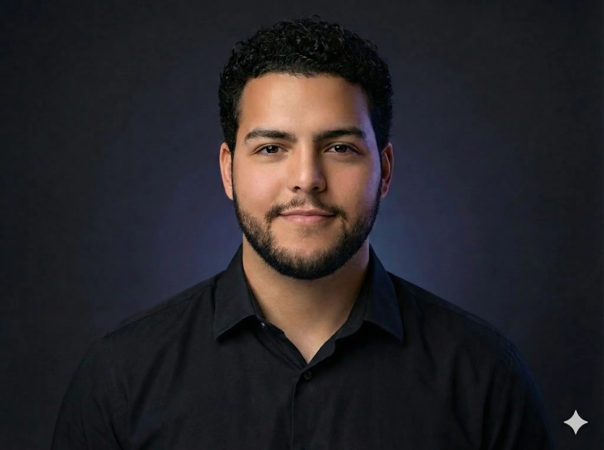

I’m a computer systems engineering student who enjoys building systems that blend hardware and software in meaningful ways. I focus on embedded systems, robotics, and FPGA/ASIC design—areas where problem-solving, curiosity, and engineering discipline come together. What motivates me most is creating tools and systems that genuinely help people.
I’ve worked on FPGA logic, digital interfaces, robotics prototypes, and Python-based lab tools used in real research environments. Some of my favorite work includes the Mini-Lysimeter Research GUI, embedded systems for BioCARE, and progressively advanced Verilog/FPGA designs as I pursue ASIC pathways.
Outside of coursework, I run Alhalawani Tech Solutions, where I’ve repaired and optimized over 200 devices—work that sharpened my debugging instincts and strengthened my understanding of electronics from the ground up.
I also enjoy building and maintaining systems for real communities. As VP Administration for CUMSA, I helped modernize the tech infrastructure for a 500+ student organization. With the Carleton Planetary Robotics Team (FPGA Subteam) and BioCARE, I support interdisciplinary engineering teams with practical, reliable tools.
Embedded Systems
Digital interfaces, microcontrollers, DAQ workflows, and low-level engineering.
Robotics
Embedded control systems, IoT integration, and mechanical/electronic prototyping.
Python Lab Tools
Data acquisition GUIs, real-time visualization, automation, and workflow improvements.
Device Repair
Diagnostics, PCB rework, performance tuning, and hands-on hardware expertise.
I like projects where engineering directly improves someone’s workflow, understanding, or experience. I’m driven by curiosity, ambitious ideas, and a desire to solve real problems well.